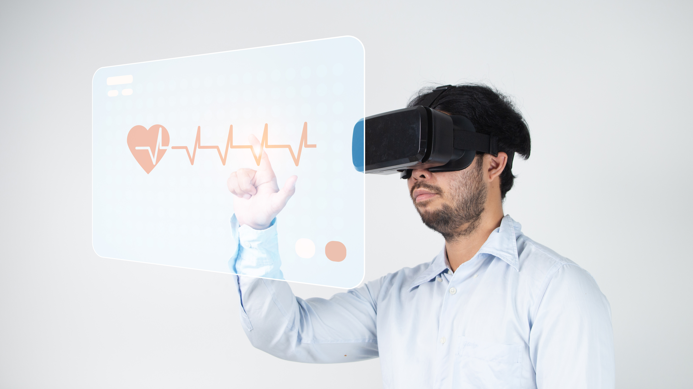

The use of VR in the medical field allows for the creation of self-guided rehabilitation programs where patients would be able to do physical therapy at home. This opens up new avenues of rehabilitation for patients unable to leave their home, while also allowing doctors to interact with patients without ever having to come into the office, while still being able to conduct tests for things like motor impairments. Using VR in this way also allows for a speedier recovery by bringing fun into a normally strenuous or dull exercise task. This could help patients with long-term physical therapy, as the environment in VR can help keep their spirits high.
VR can also be used to train doctors and nurses in healthcare better than any standard teachings could. VR programs have been created that allow healthcare professionals to experience simulated versions of different conditions. This creates a bond of empathy between a doctor and their patient as the doctor would be able to understand what the patient is going through to a degree. Along with this, VR allows surgical training using interactive digital models that can be practiced over and over again to get it right, unlike usual training in which a cadaver’s organs can only be used once in training before a new one is needed. This saves both time and money for medical institutions as they would no longer have to find ways to buy cadaver for training. Research shows that a 230% increase in surgical performance has been noted with this type of training than traditional methods.
.jpg)
This technology does not only help doctors and nurses, but also the patients themselves. Using VR, doctors are able to show a patient exactly what needs to be seen for their condition in a far more detailed manner than on a computer screen or physical model, such as an injury visible on an x-ray that would now be able to be projected into a VR headset and moved to show each part of the bone in detail. This also aids in training as it is a much more advanced way of understanding and visualizing human anatomy.